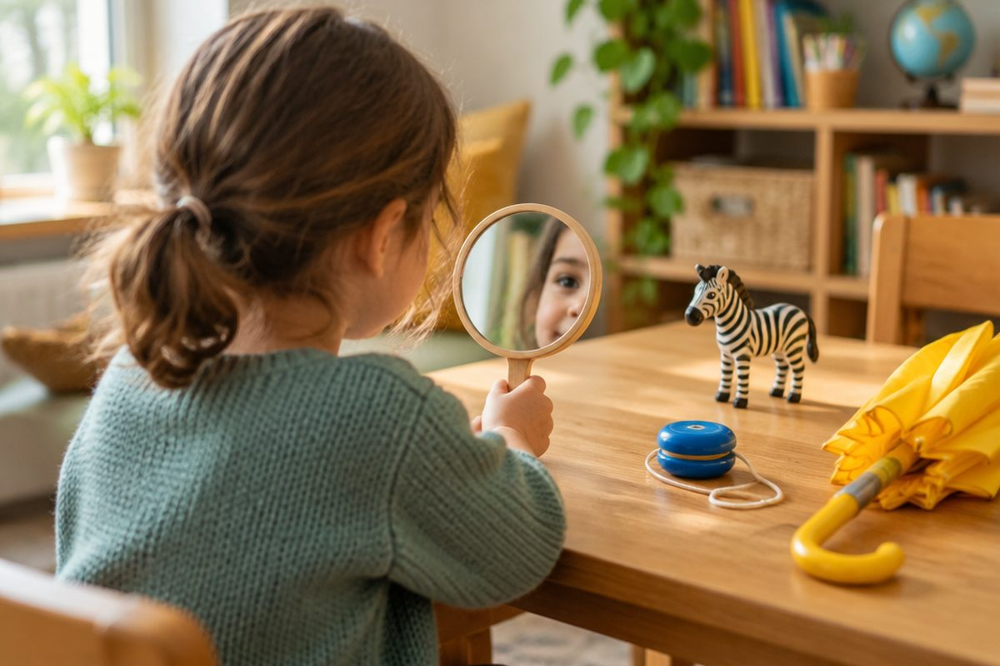

전체 단원 › 1학년 › 영어 › 1단계 · 글자 소리 n~z (파닉스)
n부터 z까지, 글자 소리를 들어 볼까?

지난번에 a부터 m까지 소리를 배웠어요. 오늘은 n부터 z까지 소리를 들어 봐요.
n부터 r까지 소리
nose는 콧소리 '은'으로 시작해요.
pig는 입술을 붙였다 '프' 터뜨려요.
q는 늘 u와 함께 다녀요. queen!
n - nose · o - octopus · p - pig · q - queen · r - rabbit
s부터 v까지 소리
sun은 뱀 소리 '스'로 시작해요.
umbrella는 짧게 '어' 해요.
violin은 윗니로 아랫입술을 물어요.
s - sun · t - tiger · u - umbrella · v - violin
w부터 z까지 소리
⌚ watch는 입술을 동그랗게 '우' 해요.
x는 fox처럼 끝에서 '크스' 소리가 나요.
zebra는 벌 소리 '즈'로 시작해요.
w - watch · x - fox · y - yo-yo · z - zebra
헷갈리는 소리 짝
v와 b는 달라요.
v는 윗니가 입술에 닿고, b는 두 입술이 붙어요.
s는 바람 소리, z는 벌 소리예요.
v - violin · b - bear · s - sun · z - zebra
핵심 낱말
- 첫소리
- 낱말을 말할 때 맨 처음 나는 소리
- 끝소리
- 낱말 맨 끝에서 나는 소리 (fox의 x)
- 입 모양
- 소리를 낼 때 입술·이·혀의 모양
꼭 알아야 할 표현
| n - nose | 👃 코 | 콧소리 '은' |
| o - octopus | 🐙 문어 | 입을 크게 벌려 '아' |
| p - pig | 🐷 돼지 | 입술을 붙였다 '프' 터뜨려요 |
| q - queen | 👸 여왕 | qu는 '크우' 소리 |
| r - rabbit | 🐰 토끼 | 입술을 동그랗게 '루' |
| s - sun | ☀️ 해 | 뱀 소리 '스' |
| t - tiger | 🐯 호랑이 | '트' 소리 |
| u - umbrella | ☂️ 우산 | 짧게 '어' |
| v - violin | 🎻 바이올린 | 윗니로 아랫입술을 물고 '브' |
| w - watch | ⌚ 손목시계 | 입술을 동그랗게 '우' |
| x - fox | 🦊 여우 | x는 끝에서 '크스' |
| y - yo-yo, z - zebra | 🪀 요요, 🦓 얼룩말 | y는 '이' 하고 짧게 미끄러지듯(yo-yo의 '요'), z는 벌 소리 '즈' |
한 줄 정리
- n부터 z까지 낱말 첫소리를 들어 봤어요.
- x는 fox처럼 낱말 끝에서 자주 소리 나요.
- v와 b, s와 z는 입 모양으로 구별해요.
학교 교육과정 연결 (미리 배우기)
- [4영01-01] 알파벳과 쉽고 간단한 단어의 소리를 듣고 식별한다.
- [4영01-04] 소리와 철자의 관계를 이해하며 쉽고 간단한 단어, 어구, 문장을 소리 내어 읽는다.